先看Github repo的架构图
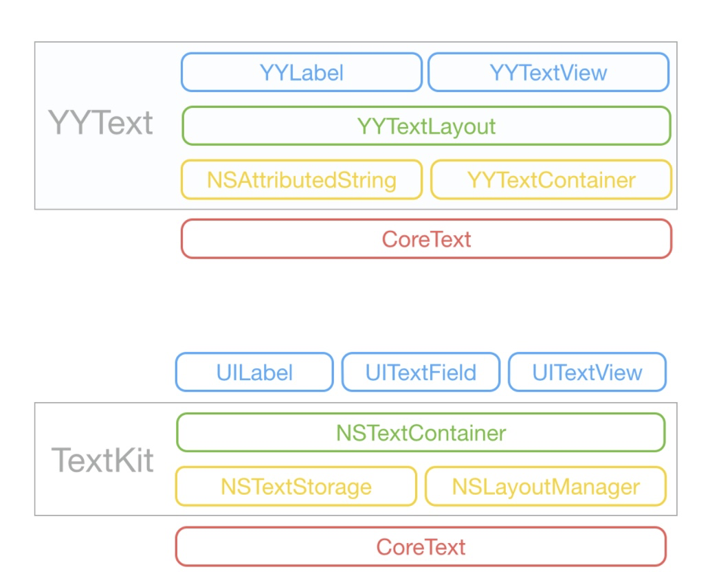
这里对TextKit的解读是错误的，TextKit官方的解读为：
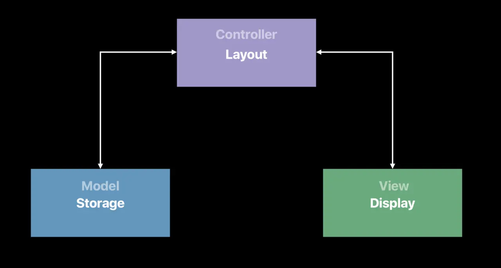
所以从结构上讲，YYText跟TextKit在类的边界上是完全一致的，都是MVC结构，仅仅就是缺少了NSTextStorage对AtrributedString的复用能力的扩展。我们知道，NSTextStorage其实是NSAttributedString的subclass，storage在我理解是扩充string的复用能力，storage能复用给多种layout和container中使用。
另一个结构区别就是，TextKit中，NSLayoutManager控制多个NSTextContainer，而一个YYTextLayout，只对应一个YYTextContainer，个人猜测YYText只针对iOS使用，不存在一个Layout使用多个Container的场景。
如何选择YYLabel还是YYTextView？如图：
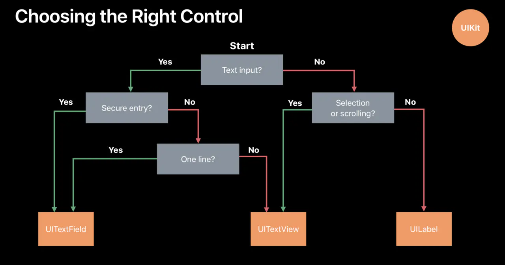
如果需要密码，必须使用UITextField，否则使用UILabel->YYLabel，UITextView->YYTextView
就可以了。
YYText与CoreText的交互
我们先描述一下总的流程：
首先我们配置好我们的NSAttributedString
使用这个string来创建一个CTFrameSetter
为CTFrameSetter提供一个CGPath，生成CTFrame
CTFrame里包含了多个CTLine
CTLine里包含了CTLine或者CTRun
调用Core Graphic的接口渲染CTRun
涉及到的CoreText的概念有CTFrameSetter、CTFrame、CTLine、CTRun。
我们从CTLine开始理解CTRun的渲染流程，再回头看如何对CTLine进行布局。
CTLine & YYTextLine
YYText对CTLine封装了YYTextLine这个类，主要处理的内容有：
- 根据YYTextLine自己的isVertical属性来从CTLine计算布局
- Base Line Position
- Bounds
- Ascent
- Descent
- 去除尾部空白的宽度
- 添加YYTextAttachment
布局常规文本
先补充一下文本的布局知识
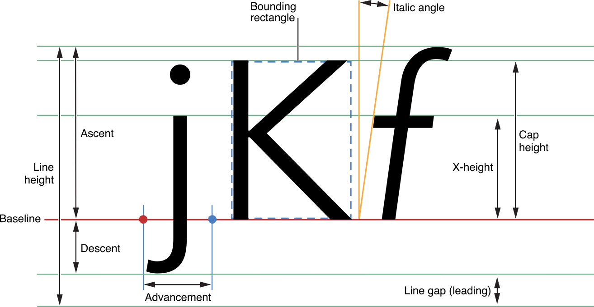
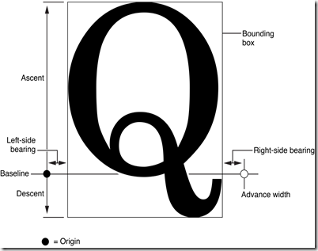
YYTextLine最主要的逻辑在两个时机调用：
从CTLine初始化的时候，初始化即计算好上述两点内容
setPosition的时候，对这个Line重新设置坐标会导致上述属性重新计算
计算Bounds的逻辑，在用CTLine初始化的时候计算这个CTLine的长宽高。
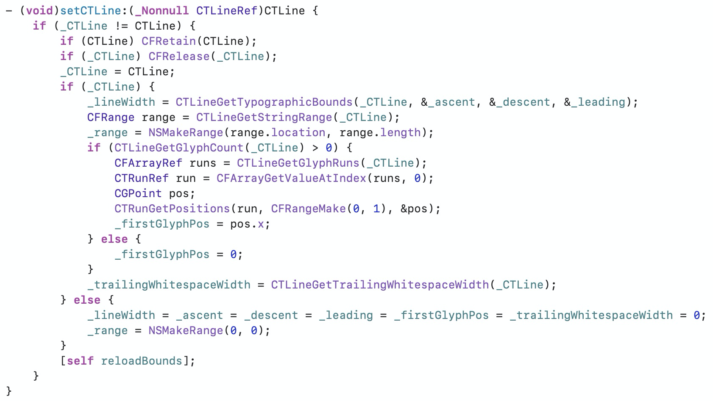
获取 lineWidth、ascent、descent、leading
获取Range
获取第一个字符的position【比如花漾字的符号的origin.x不是0，这时候需要offset】
获取trailingWhitespaceWidth
调用 reloadBounds 重新生成bounds和attachment
reloadBounds：
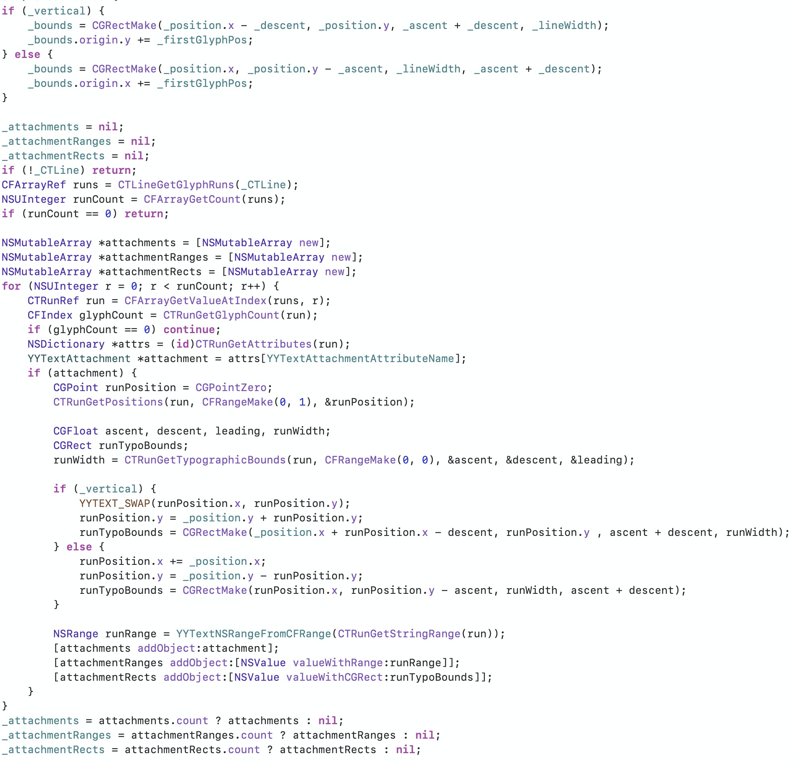
根据目前的width、leading等信息，重置Bounds，各变量定义如下：
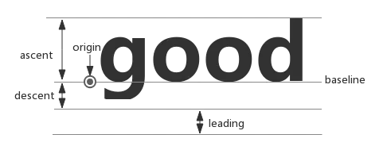
处理Attachments，每一个YYTextAttachments都用一个CTRunRef提前进行占位，那么对于一个CTLine，我们就能拿到当前line所有的CTRun，如果我们能从CTRun里获得YYTextAttachment这个属性，就认为这个CTRun是个占位的。【YYLabel无法增加NSTextAttachment的原因也是由于无法从CTRun中获取到YYTextAttachmentName对应的信息，所以不会加入YYTextLine，自然不会渲染】
获取YYTextAttachment
就像CTLine获取width、leading、ascent等属性一样，使用CTRun的函数获取width、leading、ascent这些信息，注意这里设置的CFRange的length是0，获取的是整个CTRun的width等信息。
把这个attachment的range和rect信息存储起来，
布局attachment
关于如何控制Attachment的位置：
attachment没有一个Font用来控制它的位置，我们需要手动提供它的ascent，descent，leading信息。
对于一个存储文字的CTRun，CTRunDraw这个函数是忽略baselineOffset这个属性的，这也是为什么YYText不支持BaseLineOffset的原因，UILabel支持baselineOffset，推测是直接取出glyph，setTextPosition的时候手动计算上offset的值从而生效的。
但是对于一个存储attachment的CTRun，我们拥有完整的布局能力，原因就在于所谓的attachment，其实就是个rect让我们去摆放，而一个CTRun在CTline中是已经布局好了的，我们自己控制attachment的rect的位置就好了。
对于默认的设置，图文混排的过程中，图和文是默认对齐顶部的，也就是所谓的默认是YYTextAttachmentVerticalAlignTop。为了实现Center和Bottom，我们需要重新设置baseline，从而达到对于attachment单独配置vertical属性的效果。当然也可以使用inset。
下面解析
+ (NSMutableAttributedString
\*)yy_attachmentStringWithContent:(**nullable** **id**)content
contentMode:(UIViewContentMode)contentMode
attachmentSize:(CGSize)attachmentSize
alignToFont:(UIFont \*)font
alignment:(YYTextVerticalAlignment)alignment;这个API如何使用一个Font配合几种align模式进行配置的ascent和descent的：
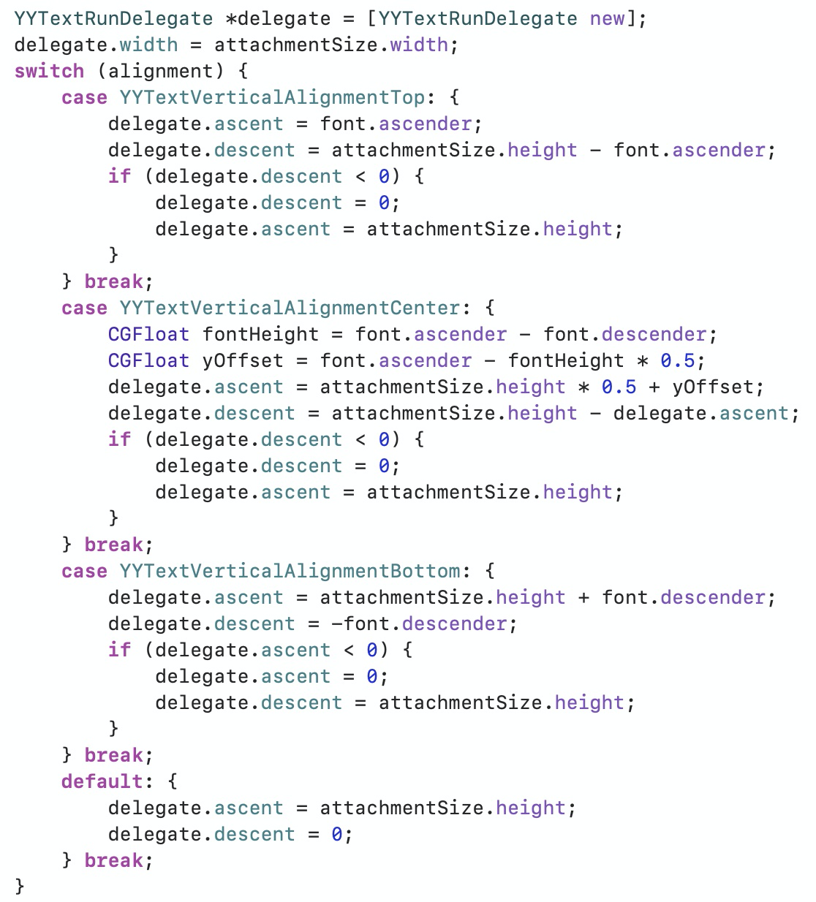
Top的情况下
取这个font的ascender，attachment多余出来的高度放到descent里。
处理descent小于0的的情况，ascent为height。
这里需要注意，如果attachment的高度比font的ascent要大，没有问题，使用font的ascent去设置图片的ascent，剩下的填充到descent里面，这里怎么填不重要，可以理解为一种define，只要后面对attachment的bounds的计算是正确的即可正确展示。
如果attachment的高度比font的ascent要小，由于descent不能小于0，所以我们设置descent为0，ascent为attachment的高度，相当于position在左下角。
这里注意，如果我们把YYTextAttachment当作普通的文字去理解它的布局行为，你会发现它少了一个baseline的处理，但是实际上我们不需要baseLine这个概念。
下面使用一个例子具体解释一下如何布局。第一行的红色篮球：
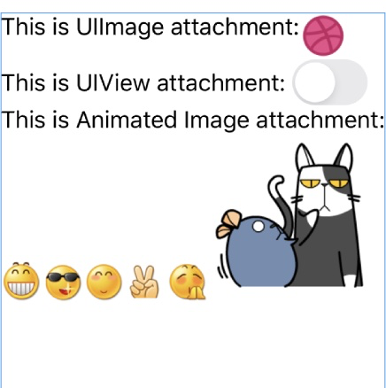
首先我们要处理的是坐标系的转换，我们可以认为，YYText的类的属性，一定是UIKit坐标系下的值，但是计算过程中，从CoreText
API得到的值，一定是处于CoreText坐标系下，这里一定要小心转换。
然后我们确定，_vertical这个属性外部并没有访问，外部仅设置了ascent和descent，不考虑纵向布局和横向布局之间的区别，所有的布局区别在CTLine的reloadBounds里，也就是上图中处理。
下面正式进入函数内处理：
YYTextLine在初始化的时候，从外部得到的position，是UIKit坐标系下的这个line的position，也就是这个Line的左下角的值。line的position就是baseLine
position，是左下角的值。
如图，这个line的UIKit坐标系下的position是（0，15）【15这个值的计算涉及CTFrameSetter，后面说】
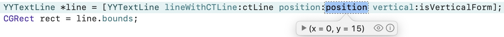
进入函数，setPosition，然后setCTLine。
setCTLine中，我们先获得 _ascent _descent _leading
_lineWidth，这些都是坐标系无关的，为yy_attachmentStringWithContent这个函数中设置的，所以直接从CoreText的API中获取即可。
值如下：
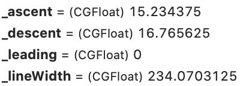
如前面所说，根据这些值，把该CTLine的bounds计算出来
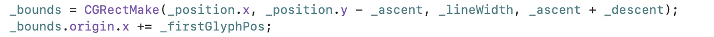
这里的计算比较简单，直接理解即可。
(origin = (x = 0, y = -0.234375), size = (width = 234.0703125, height =
32))
注意这里仍然是UIKit坐标系的值。所以这个控件的第一行的bounds我们就获取到了。重点是高度拿到了。
接下来我们看到这个CTLine里有3个CTRun
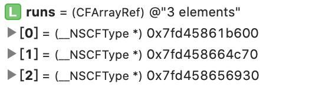
第0个Run没有获取到Attachment。
第1个Run获取到了Attachment，开始布局。
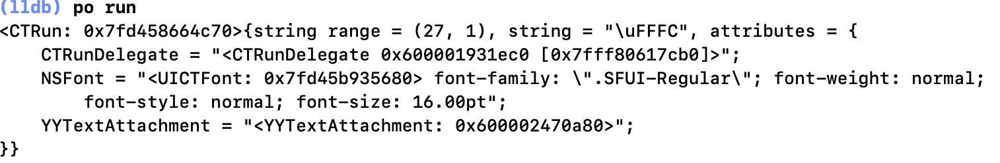
使用CTRunGetPositions获取每一个glyph的baseline
position【在这个CTLine中的坐标位置】，这里只有一个glyph，coretext坐标系下position如下：
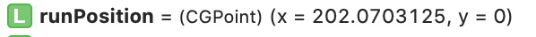
CTRunGetTypographicBounds获取大小【实际上还是我们的YYTextRunDelegate中的C函数返回的值，是我们set进去的】为32
runPosition这个局部变量的含义就是要成为这个Attachment的origin，左下角，有ascent和descent【就像普通的glyph一样】
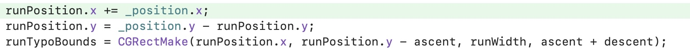
为什么runPosition.y = _position.y - runPosition.y呢？
回顾一下：
_position是这个line的baseline
position，是Line的左下角在UIKit下的的值，即距离整个label的顶部
runPosition，CoreText坐标系下的值，是相对于这个line的
那么，_position.y - runposition.y就是这个run的baseLine
position【左下角】，在整个label中的、UIKit下的值。
那么baseline
position有了，这个Run在UIKit下的rect.origin.y自然就是position.y -
ascent。那么我们绘制的时候，直接用这个UIKit下的Rect绘制即可。
如前所说，runPosition成为了attachment的origin，那么顺理成章的，前面我们yy_attachmentStringWithContent里，height不够font的ascent的时候，descent为0的时候，就可以runPosition就可以抬上去了，也就等同于普通Font的baseLineOffset。那么这里的runTypoBounds这个UIKit坐标系下的y坐标，也就仍然是runPosition.y-ascent了。
最后结果为
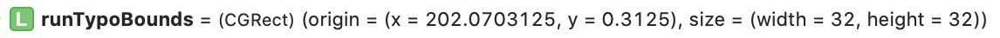
也就是红色篮球在第一行中frame。
下图框定除了每一个Glyph的边界【黄线】和baseline【红线】
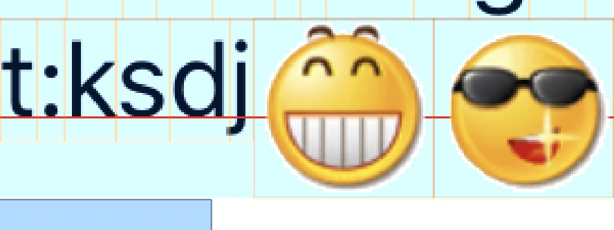
从这里就可以看到，由于attachment设置的ascent跟字体是一致的，所以baseline是在同一条线上的。
CTRun
经过上面对一个attachment的布局，实际上我们已经很清楚了，一个CTRun就是一个range，range内所有的文字具有相同的attributes。YYText对CTRun没有封装，因为本身的接口就不复杂，没有封装的必要了。
主要接口：
CTRunGetGlyphCount Gets the glyph count for the run.
CTRunGetAttributes Returns the attribute dictionary that was used to
create the glyph run.
CTRunGetStatus Knowing the direction and ordering of a run's glyphs can
aid in string index analysis, whereas knowing whether the positions
reference the identity text matrix can avoid expensive comparisons.
CTRunGetGlyphs get glyphs
CTRunGetPositions get every glyph's position
CTRunGetAdvancesPtr get every glyph's advance
CTRunGetTypographicBounds get this run's ascent, descent, leading,
width
CTRunDraw
绘制一个run，discussion里说这是一个便捷方法，因为可以通过获得Run里每一个glyph去单独渲染glyph，这个操作会让context处于任意的状态，渲染结束后不会刷新
注意⚠️：
YYText中支持的CoreText属性，实际上都是CTRunDraw这个函数支持的attributes，如baseLineOffset之类的属性，CTRunDraw不支持，需要我们手动获取每一个Glyph，去布局渲染。这个函数原生也不支持Vertical布局，所以YYText这里只vertical的情况下手动布局渲染每一个Glyph，并且没有支持baseLineOffset属性的配置。
CTFrame
一个frame包含多个行，CTFrame是CTFramesetter的text-framing 的处理结果
你可以直接把CTFrame绘制出来（CoreGraphic接口），CTFrame包含了一个由CTLine组成的数组，可以从行里获得glyph信息后单独绘制每一个行。
常用接口：
CFTypeID CTFrameGetTypeID( void );
CFRange CTFrameGetStringRange( CTFrameRef frame );
// 获取真正在frame里的字符的range
CFRange CTFrameGetVisibleStringRange( CTFrameRef frame );
// 获取用于创建frame的path
CGPathRef CTFrameGetPath( CTFrameRef frame );
// 获取用于创建frame的所有属性
CFDictionaryRef \_Nullable CTFrameGetFrameAttributes( CTFrameRef frame
);
// 获取组成frame的所有line
CFArrayRef CTFrameGetLines( CTFrameRef frame );
// 获得每一行的origin数组
void CTFrameGetLineOrigins( CTFrameRef frame, CFRange range, CGPoint
origins\[\_Nonnull\] );
// 此方法就是将CTFrame绘制到上下文
void CTFrameDraw( CTFrameRef frame, CGContextRef context );
DATA types
CTFramePathFillRule 判断某个点是否在一个path内的规则，非0规则和奇偶规则
[kCTFramePathFillEvenOdd](https://developer.apple.com/documentation/uikit/uibezierpath/1624360-usesevenoddfillrule?language=objc)
kCTFramePathFillWindingNumber
Constants
CTFrameProgression
kCTFrameProgressionTopToBottom = 0,
kCTFrameProgressionRightToLeft = 1,
kCTFrameProgressionLeftToRight = 2,
[[kCTFrameProgressionAttributeName]{.ul}](https://developer.apple.com/documentation/coretext/ctframe/kctframeprogressionattributename?language=objc)
Specifies progression for a frame.
[kCTFramePathFillRuleAttributeName](https://developer.apple.com/documentation/coretext/ctframe/kctframepathfillruleattributename?language=objc)
The key used to specify the fill rule for a frame.
[kCTFramePathWidthAttributeName](https://developer.apple.com/documentation/coretext/ctframe/kctframepathwidthattributename?language=objc)
The key used to specify the frame width.
[kCTFrameClippingPathsAttributeName](https://developer.apple.com/documentation/coretext/ctframe/kctframeclippingpathsattributename?language=objc)
Specifies array of paths to clip frame.
[kCTFramePathClippingPathAttributeName](https://developer.apple.com/documentation/coretext/ctframe/kctframepathclippingpathattributename?language=objc)
Specifies clipping path. This attribute is valid only in a dictionary
contained in an array specified by kCTFrameClippingPathsAttributeName.CTFramesetter
Object factory for CTFrame
接受一个字符串，和一个descriptor，使用typesetter创建lines，放入CTFrame作为输出
接口：
CTFramesetterRef CTFramesetterCreateWithTypesetter(CTTypesetterRef
typesetter)
//Each framesetter uses a typesetter internally to perform line breaking
and other contextual analysis based on the characters in a string. This
function allows use of a typesetter that was constructed using specific
options.仅在ios12以上可用
CTFramesetterRef
CTFramesetterCreateWithAttributedString(CFAttributedStringRef attrString
)
//YYText里使用的方法
CTFrameRef CTFramesetterCreateFrame(CTFramesetterRef framesetter,CFRange
stringRange,CGPathRef path,CFDictionaryRef **\_Nullable**
frameAttributes )
//This call will create a frame full of glyphs in the shape of the path
provided by the \"path\" parameter. The framesetter will continue to
fill the frame until it either runs out of text or it finds that text no
longer fits.YYText的异步渲染
YYText另一个为人称道的就是异步，简书上有一个比较好的解析，来一个TLDR版：
做了一个YYAsyncLayerGetDisplayQueue的函数，用来决定异步渲染工作async提交到哪个queue里，内部逻辑是建立了跟CPU核心相同数量的queue数组，数组里的每一个queue都是串行的，如果引入了YYKit里QOS相关的文件，可以在release里开启QOS。
YYTextSentinel
*sentinel是一个YYLabel的属性，用来计数，每一次更新都会setNeedsDisplay，或者其他操作取消之前创建的display
task的时候，就会修改这个sentinel，异步过程中会在重大任务前检查这个字段的值是否跟任务开始前copy的那份一致，一致说明没有新任务或者被cancle，不一致则放弃本次工作。重大任务包括：创建CGContext，关闭CGContext，设置layer.contents，从Context里获取UIImage等。
YYTextAsyncLayerDisplayTask包含3个block用来处理：
willDisplay 清理工作，检查和处理attachments的diff
Display 执行最主要的文本绘制工作
1. check cancelled
2. check layout needs update
rebuild layout
should shrink layout
3. 根据YYTextVerticalAlignment调整渲染出来的图像的position
4. draw in context with size & position
didDisplay 执行YYLabel的属性更新工作
1. 如果shrinked，赋值shrinkLayout
2. 如果这次的渲染任务被cancel了，清除所有的attachment
3.添加fade in out的CATransition动画
但是经过实践，所谓的async并不能起到很好的效果，yytext本身无法处理很重的任务（受限于CoreText），而轻量的任务本身async跟sync的区别就不大。还需要注意需要把fadeAnimation关闭，否则可能会发生闪烁。